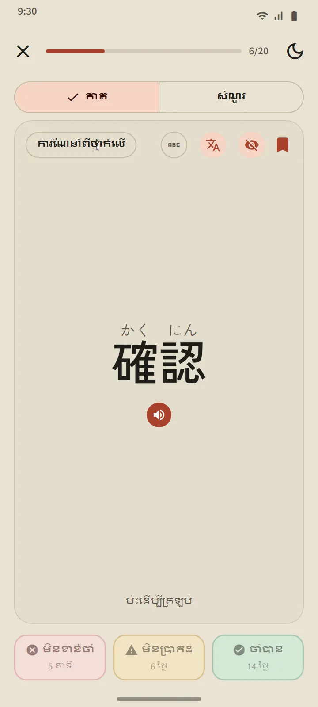
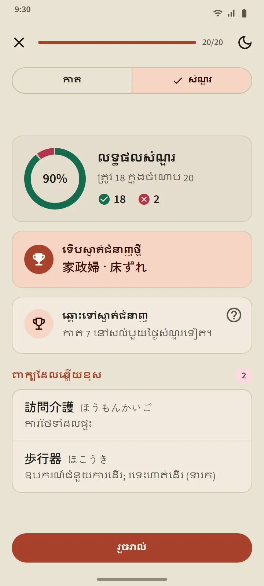
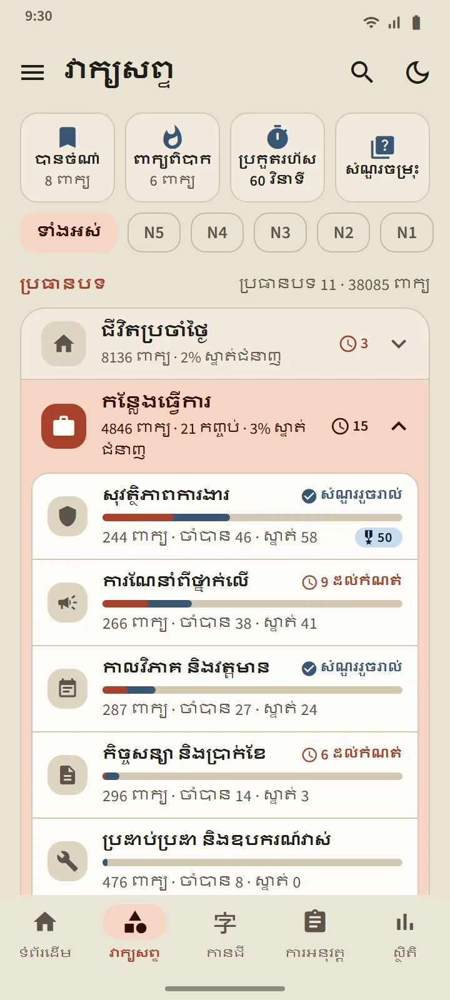
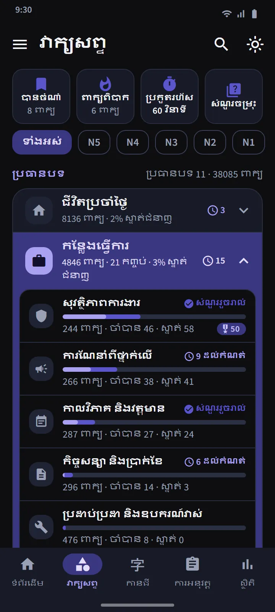
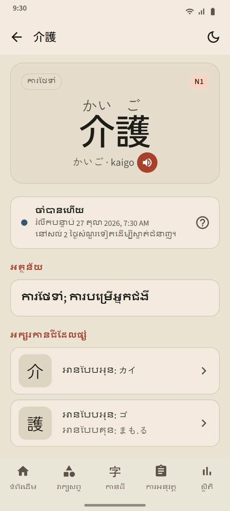

កាតដែលដឹងថាពេលណាអ្នកជិតភ្លេច
ផ្នែកខាងមុខនៃកាតបង្ហាញពាក្យ (ជាមួយហ្វុរីហ្កាណា បើអ្នកចង់បាន)។ ចុចដើម្បីត្រឡប់៖ ការអាន រ៉ូម៉ាជី អត្ថន័យ និងអក្សរកានជីដែលផ្សំ ព្រមទាំងប៊ូតុងបញ្ចេញសំឡេង។ បន្ទាប់មក វាយតម្លៃខ្លួនឯងដោយប៊ូតុងមួយក្នុងចំណោមប៊ូតុងបី។
ការកំណត់ពេលធ្វើឡើងដោយ FSRS ដែលជាក្បួនរំលឹកឡើងវិញតាមចន្លោះពេល ដូចគ្នានឹងក្បួនដែលកម្មវិធីកាតចងចាំទំនើបៗប្រើ។ ប៊ូតុងនីមួយៗបង្ហាញថាពេលណាពាក្យនោះនឹងត្រឡប់មកវិញ៖ ប៉ុន្មាននាទី ប៉ុន្មានថ្ងៃ ឬប៉ុន្មានសប្ដាហ៍ក្រោយ។ កាលណាអ្នកឆ្លើយ «ចាំបាន» កាន់តែញឹកញាប់ ចន្លោះពេលកាន់តែវែង។
- មិនទាន់ចាំ បញ្ជូនពាក្យត្រឡប់ទៅ «កំពុងរៀន» វិញ ពីដំណាក់កាលណាក៏ដោយ។
- មិនប្រាកដ ធ្វើឱ្យចន្លោះពេលរបស់វាខ្លីជាងមុន។
- ចាំបាន នាំពាក្យទៅ «ចាំបានហើយ» ហើយរុញការរំលឹកបន្ទាប់ឱ្យឆ្ងាយជាងមុន។


បួនដំណាក់កាល ហើយ «ស្ទាត់ជំនាញ» ត្រូវតែបញ្ជាក់
ពាក្យនីមួយៗឡើងតាមបួនដំណាក់កាល៖ ថ្មី កំពុងរៀន ចាំបានហើយ ស្ទាត់ជំនាញ។ ការចុច «ចាំបាន» លើកាត នាំពាក្យទៅត្រឹម «ចាំបានហើយ» ប៉ុណ្ណោះ។ ដើម្បីទៅដល់ «ស្ទាត់ជំនាញ» អ្នកត្រូវឆ្លើយពាក្យនោះឱ្យត្រូវក្នុងសំណួរ នៅបីថ្ងៃផ្សេងគ្នា។ ពាក្យដែលស្ទាត់ជំនាញហើយ នៅតែត្រូវបានសាកល្បងពេលដល់កំណត់ ហើយធ្លាក់ចុះវិញបើអ្នកឆ្លើយខុស។
សំណួររបស់កញ្ចប់មួយបើក នៅពេលពាក្យ 20 ក្នុងកញ្ចប់នោះស្ថិតក្នុង «ចាំបានហើយ» ឬ «ស្ទាត់ជំនាញ» (កញ្ចប់តូចជាងនេះបើកភ្លាម ពេលពាក្យទាំងអស់របស់វាចាំបានហើយ)។ សំណួរមានទាំងពីរទិស៖ ពីពាក្យទៅអត្ថន័យ និងពីអត្ថន័យទៅពាក្យ។ នៅចុងបញ្ចប់ អ្នកឃើញពាក្យដែលទើបស្ទាត់ជំនាញ ពាក្យដែលនៅសល់តែមួយជំហានទៀត និងពាក្យដែលអ្នកឆ្លើយខុស។


រៀនតាមប្រធានបទ តាមដានគ្រប់ពាក្យ
ផ្ទាំង «វាក្យសព្ទ» ចែកជា 11 ក្រុម ហើយក្រុមនីមួយៗមានកញ្ចប់តូចៗ។ តម្រងនៅខាងលើបង្រួមអ្វីៗទាំងអស់មកត្រឹមកម្រិត JLPT មួយ។ កញ្ចប់នីមួយៗមានអេក្រង់របស់វាផ្ទាល់៖ រង្វង់ភាគរយដែលបានបញ្ចប់ បញ្ជីពាក្យជាមួយស្ថានភាពរបស់ពាក្យនីមួយៗ តម្រង កំពុងរៀន/ចាំបានហើយ/ស្ទាត់ជំនាញ និងប៊ូតុង «រៀន» និង «សំណួរ»។
ក្រុម កន្លែងធ្វើការ មាន 21 កញ្ចប់សម្រាប់បេក្ខជនដែលនឹងទៅធ្វើការនៅជប៉ុន៖ សុវត្ថិភាពការងារ, ការណែនាំពីថ្នាក់លើ, កាលវិភាគ និងវត្តមាន, កិច្ចសន្យា និងប្រាក់ខែ, ប្រដាប់ប្រដា និងឧបករណ៍វាស់, ភស្តុភារ និងឃ្លាំង, ការិយាល័យ និងឯកសារ, ការផលិតអាហារ, ការថែទាំ, រោងចក្រ និងផលិតកម្ម, ម៉ាស៊ីនឧស្សាហកម្ម, អេឡិចត្រូនិច និងអគ្គិសនី, សំណង់, ភោជនីយដ្ឋាន និងផ្ទះបាយ, កសិកម្ម, ការសាងសង់កប៉ាល់, ការសម្អាតអគារ, ជលផល, យានយន្ត និងការជួសជុល, អាកាសចរណ៍ និងព្រលានយន្តហោះ, សេវាកម្មបដិសណ្ឋារកិច្ច។ សម្រាប់ការរស់នៅក្នុងប្រទេសជប៉ុន មានកញ្ចប់អំពីការដឹកជញ្ជូន ការទិញទំនិញ និងលុយ ផ្ទះ និងគ្រឿងសង្ហារិម ព្រមទាំងក្រុម សង្គម និងរដ្ឋបាល និង រាងកាយ និងសុខភាព។
| ក្រុម | កញ្ចប់ |
|---|---|
| ជីវិតប្រចាំថ្ងៃ | 16 |
| កន្លែងធ្វើការ | 21 |
| សង្គម និងរដ្ឋបាល | 8 |
| រាងកាយ និងសុខភាព | 8 |
| និស្ស័យ និងអារម្មណ៍ | 8 |
| ថ្នាក់ពាក្យ | 5 |
| បច្ចេកវិទ្យា និងប្រព័ន្ធផ្សព្វផ្សាយ | 4 |
| ធម្មជាតិ និងវិទ្យាសាស្ត្រ | 10 |
| ការសិក្សា និងយោបល់ | 8 |
| វប្បធម៌ និងសាសនា | 4 |
| កីឡា និងល្បែង | 3 |


កញ្ចប់ពិសេស និងការអនុវត្តរហ័ស
នៅខាងលើបញ្ជីក្រុម មានកញ្ចប់បីដែលទាញពាក្យពីគ្រប់កញ្ចប់៖ បានចំណាំ (ពាក្យដែលអ្នកដាក់ផ្កាយ) ពាក្យពិបាក (បំពេញដោយខ្លួនឯងនូវពាក្យដែលអ្នកភ្លេចញឹកញាប់លើកាត ឬឆ្លើយខុសក្នុងសំណួរ) និង ប្រកួតរហ័ស 60 វិនាទី (កាតច្រើនតាមដែលធ្វើបានក្នុងមួយនាទី)។ ក្រឡាទីបួន សំណួរចម្រុះ សាកល្បងពាក្យ «ចាំបានហើយ» និង «ស្ទាត់ជំនាញ» ពីគ្រប់កញ្ចប់ក្នុងពេលតែមួយ។

វចនានុក្រមហោប៉ៅ 38,085 ពាក្យ
រូបតំណាងស្វែងរកនៅផ្នែកខាងលើនៃអេក្រង់ រកពាក្យណាក៏បានតាមកានជី កាណា រ៉ូម៉ាជី ឬអត្ថន័យ។ លទ្ធផលត្រូវបានរៀបតាមកម្រិតនៃការត្រូវគ្នា ហើយរ៉ូម៉ាជីត្រូវបានផ្គូផ្គងដោយបត់បែនតាមរបៀបប្រកប៖ shinbun និង shimbun, koohii និង kōhī, arigato និង arigatou សុទ្ធតែរកឃើញពាក្យតែមួយ។ ពាក្យនីមួយៗមានទំព័រលម្អិត៖ ដំណាក់កាល និងការរំលឹកបន្ទាប់របស់វា អត្ថន័យ អក្សរកានជីដែលផ្សំជាមួយការអានរបស់វា និងប៊ូតុងបញ្ចេញសំឡេង។


កម្រិត និងភាសានៃអត្ថន័យ
កម្រិតរបស់ពាក្យគឺជាការប៉ាន់ស្មាន៖ Japan Foundation មិនចេញផ្សាយបញ្ជីវាក្យសព្ទផ្លូវការទេ ដូច្នេះការចាត់កម្រិតត្រូវបានរៀបចំពីបញ្ជី JLPT ចាស់ៗ និងប្រេកង់នៃការប្រើប្រាស់។ គ្មានកម្រិតពាក្យ «JFT» ដាច់ដោយឡែកទេ៖ JFT-Basic សាកល្បងវាក្យសព្ទមូលដ្ឋានដូចគ្នានឹង N5 និង N4 បូករួមពាក្យសម្រាប់កន្លែងធ្វើការ។
អត្ថន័យពេញលេញក្នុង 15 ភាសា រួមទាំងកូរ៉េ និងចិនអក្សរបុរាណ។ ភាសាបកប្រែអាចជ្រើសដាច់ដោយឡែកពីភាសាចំណុចប្រទាក់នៅក្នុងការកំណត់។
| កម្រិត | ពាក្យ | ឥតគិតថ្លៃ |
|---|---|---|
| N5 | 1,030 | 1,007 |
| N4 | 2,044 | 1,503 |
| N3 | 11,230 | 4,097 |
| N2 | 11,309 | 2,290 |
| N1 | 12,472 | 503 |